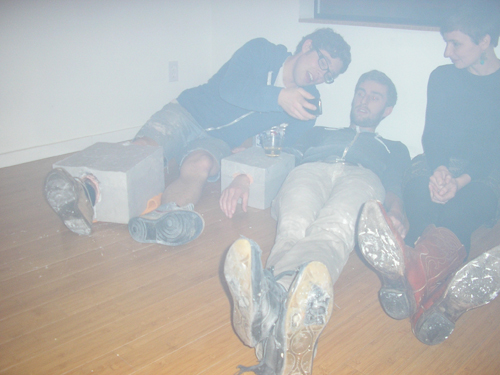

I'll Think About it Later
(wouldn't it be nice to be thorough and on time in all things?)
by Max Kraushaar and Graham Downing
"stoned" performance by Max Kraushaar and Graham Downing
"stoned" (detail) performance by Max Kraushaar and Graham Downing
"if I could turn back time" (plank of wood sanded down too far and filled in with putty on plexi shelf) by Max Kraushaar and untitled (alarm clock on nightstand and pennies) by Graham Downing
"stoned" performance by Max Kraushaar and Graham Downing
"stoned" performance by Max Kraushaar and Graham Downing

Fog filling up the room ...
"overnight shipping" live stream projection from back of truck delivering sculpture to gallery
"stoned" working titleframed legal agreement

"license plate" (32 unpaid parking tickets suspended by twine and found chains on gold plate) by Graham Downing
"Photo of a photo birthday cake with a photo of a photo birthday cake on it" a birthday gift by Max Kraushaar and Graham Downing
--------------------------------------------------------------------------------
I'll Think About it Later
by Max Kraushaar and Graham Downing
November 26, 2011
Image: animated gif by Max Kraushaar and Graham Downing
I'll Think About it Later (Wouldn't it be Nice To be Thorough and On Time in All Things?)
a performance by Max Kraushaar and Graham Downing
Saturday November 26th, 6-12 pm
Max Kraushaar and Graham Downing will attempt to create an encapsulated moment of procrastination in what is likely to be a very captivating performance.
This show will also mark the second anniversary of NEPO House (and my birthday). To celebrate cake will be served and dancing with DJ Never Leaves will follow.
--------------------------------------------------------------------------------